종합해석 · 전체 페이지
1365×853 CSS px · 실제 Linux Chromium · 2026-11-06T04:08:49.180Z
SHA-256 9be946fd8eef941258da53fc50c433dfb0e3d55055e4ef349cdb02c2276a95f4
종합해석
1365×853 CSS px · 실제 Linux Chromium · 2026-11-06T04:08:48.982Z
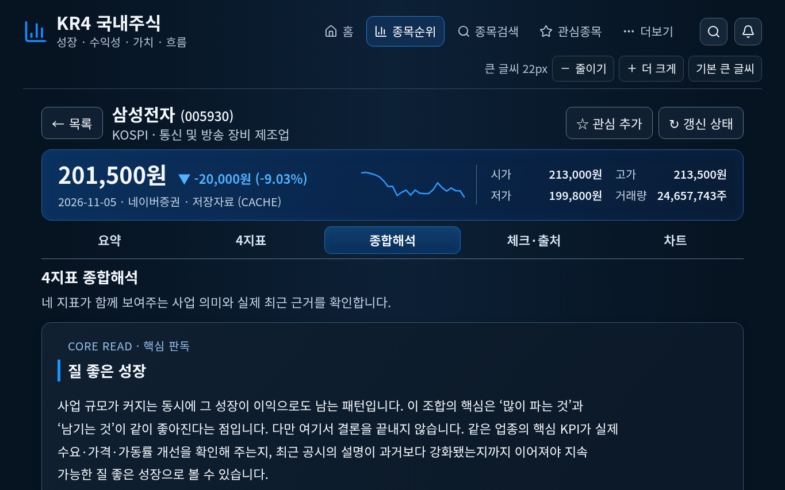
SHA-256 cf5a34758ef6ca770cd698616d213feafe873ec18de765b27d40019a7ec5e346
종합해석 · 전체 페이지
1920×1200 CSS px · 실제 Linux Chromium · 2026-11-06T04:08:58.208Z
SHA-256 35d0ddbedb5b30d1c471b087ab34c99f14697f1e036b949a27d74ff111d33313
종합해석
1920×1200 CSS px · 실제 Linux Chromium · 2026-11-06T04:08:57.915Z
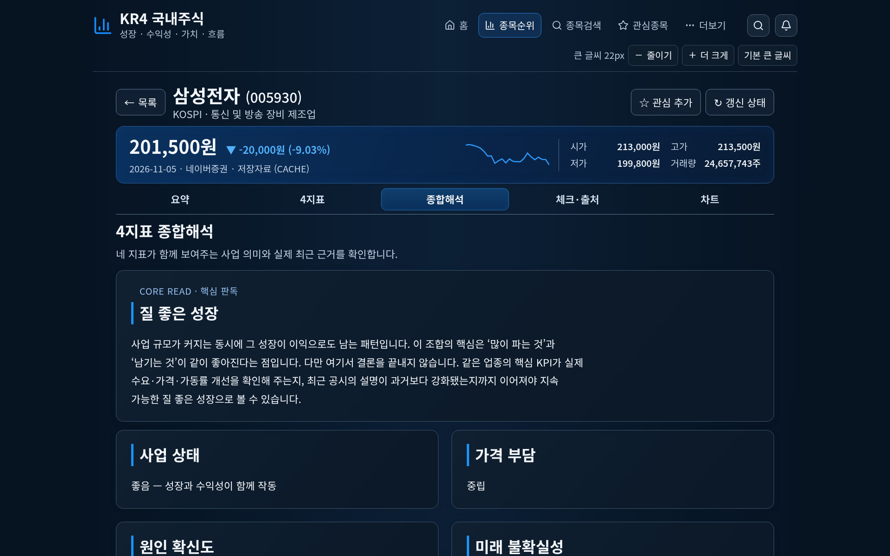
SHA-256 fc069cfb50056bed6c87021e21d4bd6e1f5b7736f91078f993a1e0547e72d608
실제 주가 차트
1365×853 CSS px · 실제 Linux Chromium · 2026-11-06T04:08:48.718Z
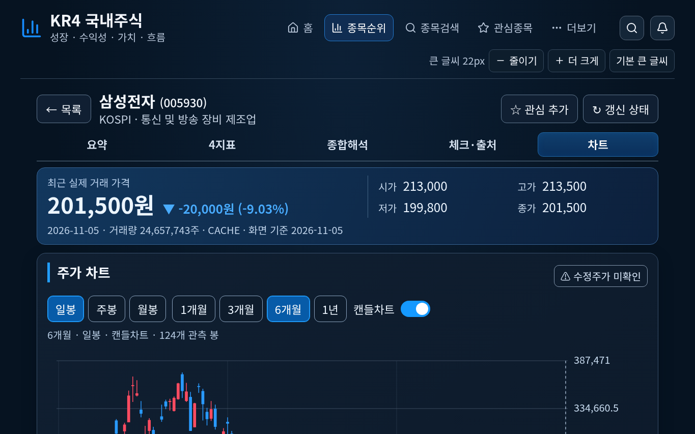
SHA-256 9ab0dee6a419b73c48e57360375a6a15994b3ad19179a7aa609987e0ee82b4a3
실제 주가 차트
1920×1200 CSS px · 실제 Linux Chromium · 2026-11-06T04:08:57.591Z
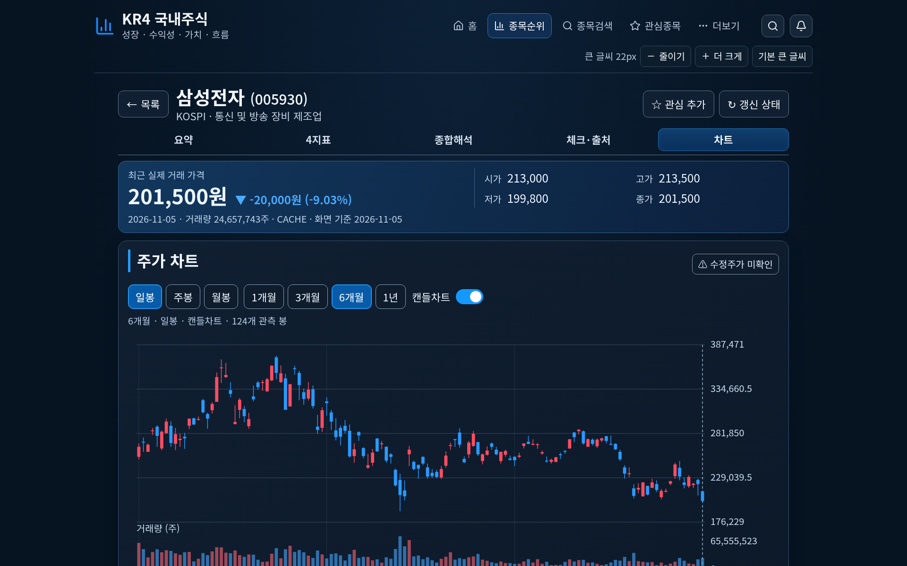
SHA-256 f03dfcc65050be75533f5dd8c53b33e22508c5f096447960f04017b814d017b9
종목 상세 · 4지표
1365×853 CSS px · 실제 Linux Chromium · 2026-11-06T04:08:48.375Z
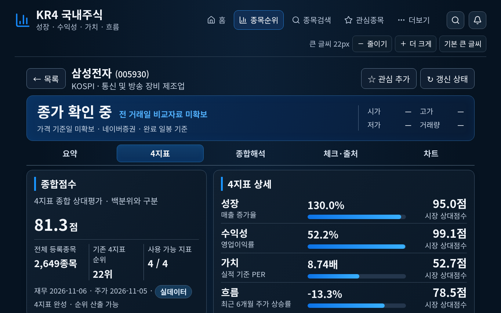
SHA-256 4db78275d29bfc76259d83ffde507d9e41a4df93598e76e62d38b24cbb2ecf52
종목 상세 · 4지표
1920×1200 CSS px · 실제 Linux Chromium · 2026-11-06T04:08:57.181Z
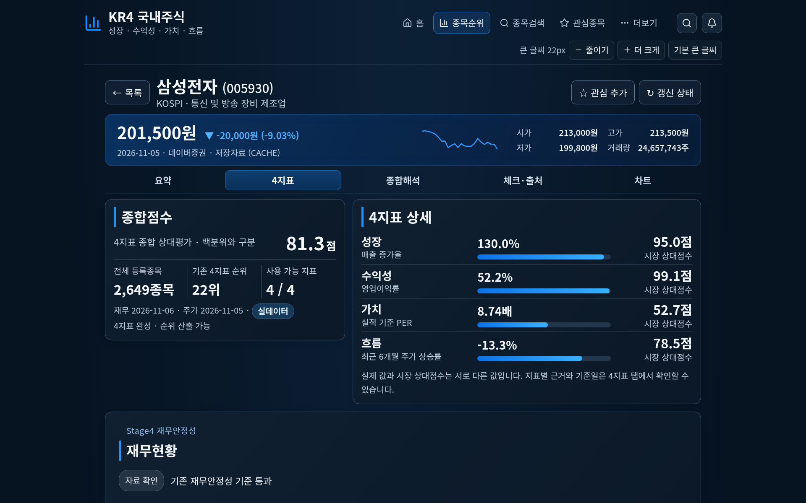
SHA-256 a40d3b281b25f5f0e7c94926a673b366fc37fd422f6692a775113f9969f8d190
홈 대시보드
1365×853 CSS px · 실제 Linux Chromium · 2026-11-06T04:08:47.583Z
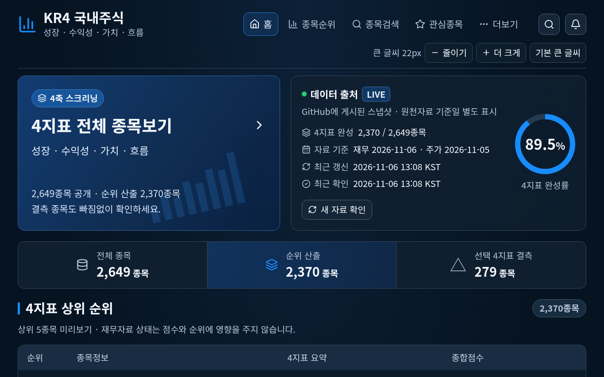
SHA-256 a3823382b3a239885d99c9123b712382832c9701a1716634b809b265d9522066
홈 대시보드
1920×1200 CSS px · 실제 Linux Chromium · 2026-11-06T04:08:56.609Z
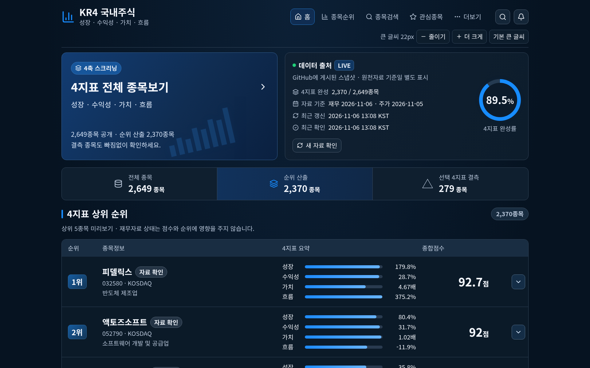
SHA-256 9fc5490c56fea6fa8a3f03f3ffaa3e0bd15d9b868919c8437c99ae9e5ec43542
실제 분기 실적
1365×853 CSS px · 실제 Linux Chromium · 2026-11-06T04:08:51.542Z
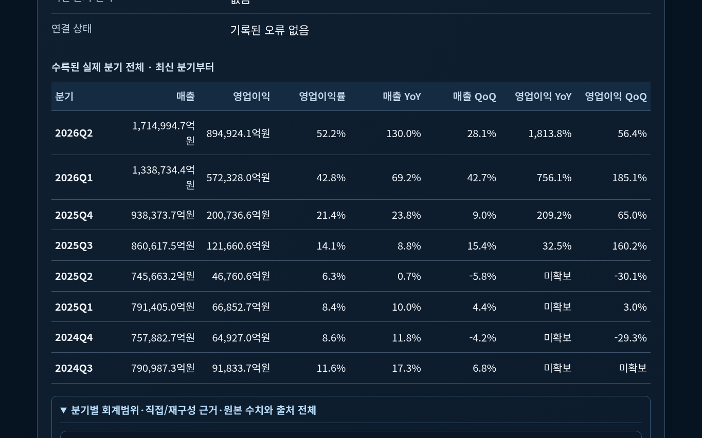
SHA-256 d4d6257344bfb719e66d41274bfe4ac2b4e2cc98dc099249bc011bbfdff882e5
실제 분기 실적
1920×1200 CSS px · 실제 Linux Chromium · 2026-11-06T04:09:00.708Z
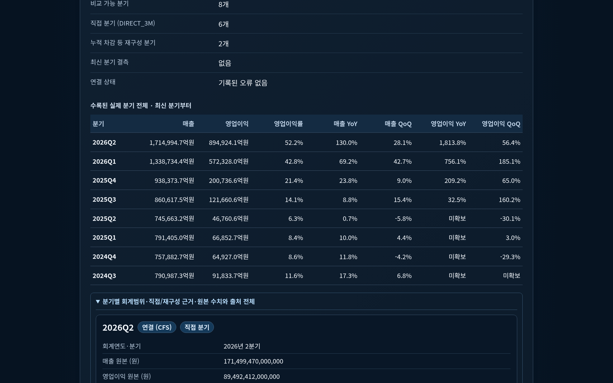
SHA-256 f269fa0c7898d2cb1d04daa28d0dc34c119cb43a2da6568049a09c7c5156cf81
전체 종목 순위
1365×853 CSS px · 실제 Linux Chromium · 2026-11-06T04:08:47.954Z

SHA-256 240bfb7e6d071964516545126893cf1232b935debf84b760474e1b190722e30b
전체 종목 순위
1920×1200 CSS px · 실제 Linux Chromium · 2026-11-06T04:08:56.883Z
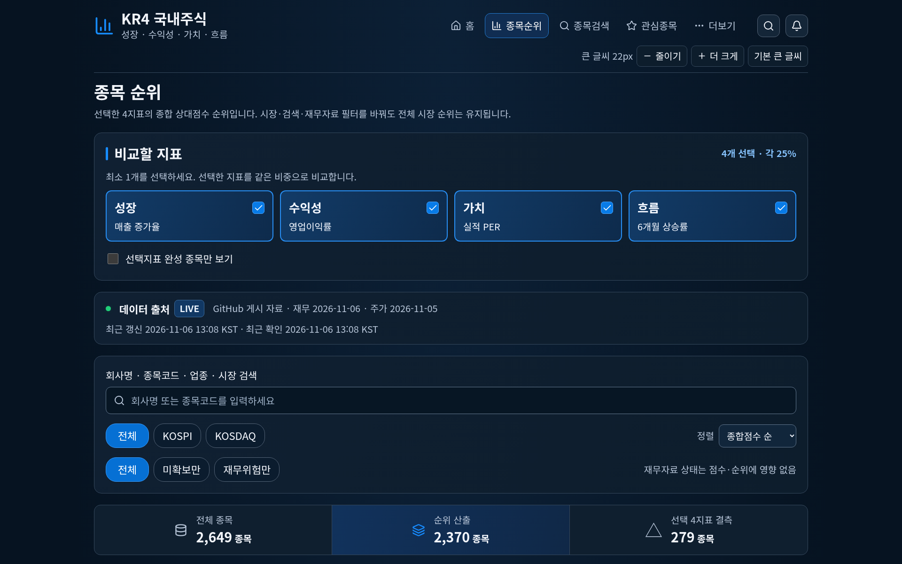
SHA-256 fc25a4d6aea110526d8aa91bdf32a81698841547af5cff9828235cfec31f4dff
체크·출처 · 전체 페이지
1365×853 CSS px · 실제 Linux Chromium · 2026-11-06T04:08:52.094Z
SHA-256 cc5faa87172daa55f43ddf928861e7ffce1b390d3b4d3aac35ce3a80f231bd00
체크·출처
1365×853 CSS px · 실제 Linux Chromium · 2026-11-06T04:08:51.889Z
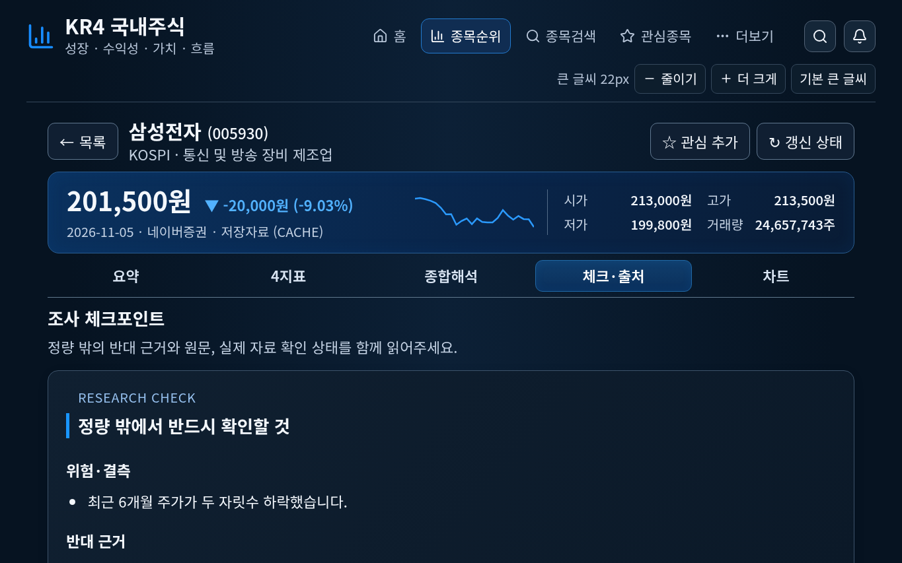
SHA-256 4da7ade93e0b26c4f2ed7e90bc5da9acc0bdf1873ef64999c73fa7c9adb68768
체크·출처 · 전체 페이지
1920×1200 CSS px · 실제 Linux Chromium · 2026-11-06T04:09:01.446Z

SHA-256 ddc81abe96567108bef569d011b76da4250cc5604b701880bb633e7a3744f7d7
체크·출처
1920×1200 CSS px · 실제 Linux Chromium · 2026-11-06T04:09:01.056Z
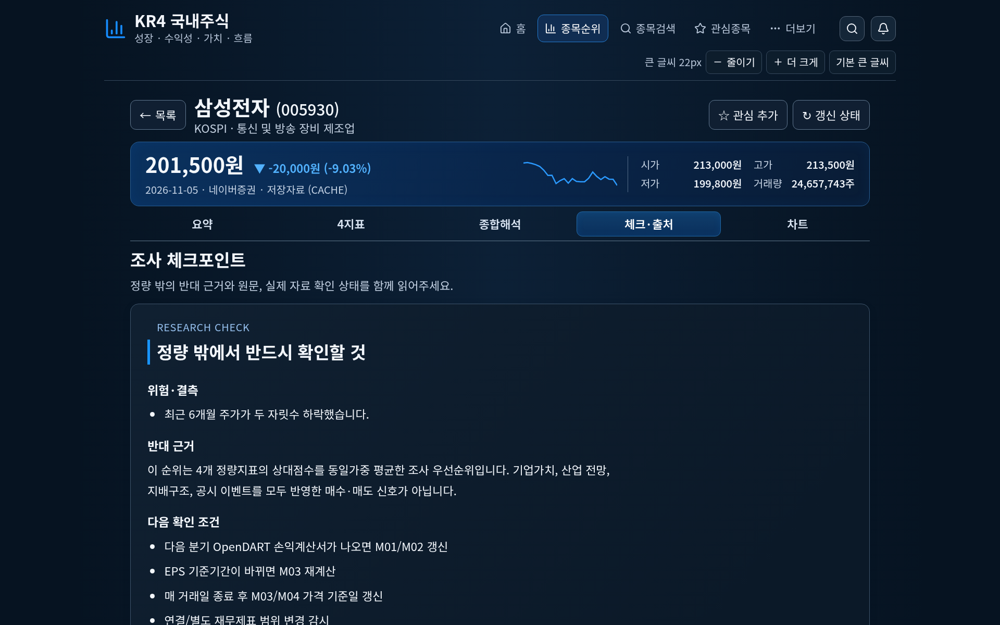
SHA-256 396c4e8246c691a5f89f0c192974a0e026130d494beb18d46ba6c67e45872d1c
실제 주가 차트 · 일반 스크롤
1365×853 CSS px · 실제 Linux Chromium · 2026-11-06T04:09:06.837Z
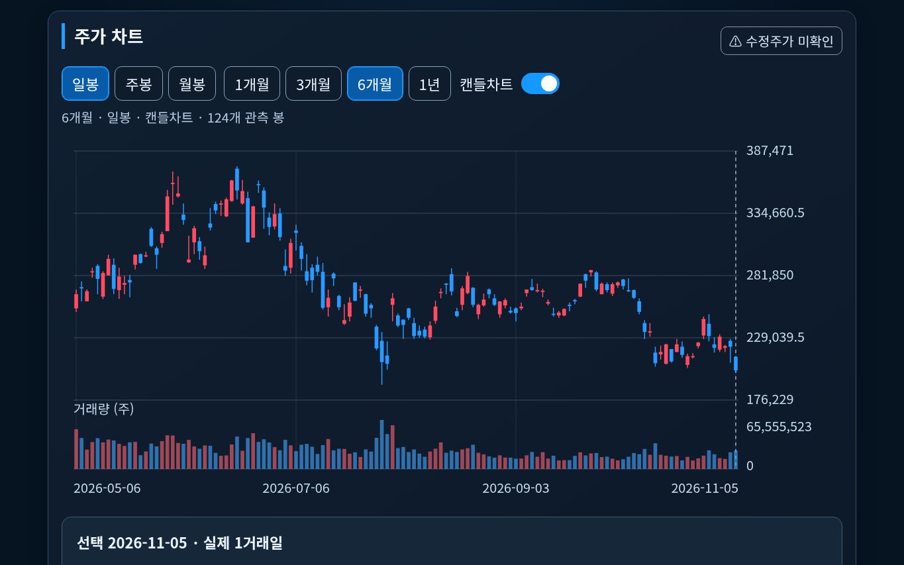
SHA-256 c7211ece3f86cb6626b0bccbb8cb94d1e173e64ab10a1e552df1a58c979fb554
실제 주가 차트 · 일반 스크롤
1365×853 CSS px · 실제 Linux Chromium · 2026-11-06T04:09:06.971Z
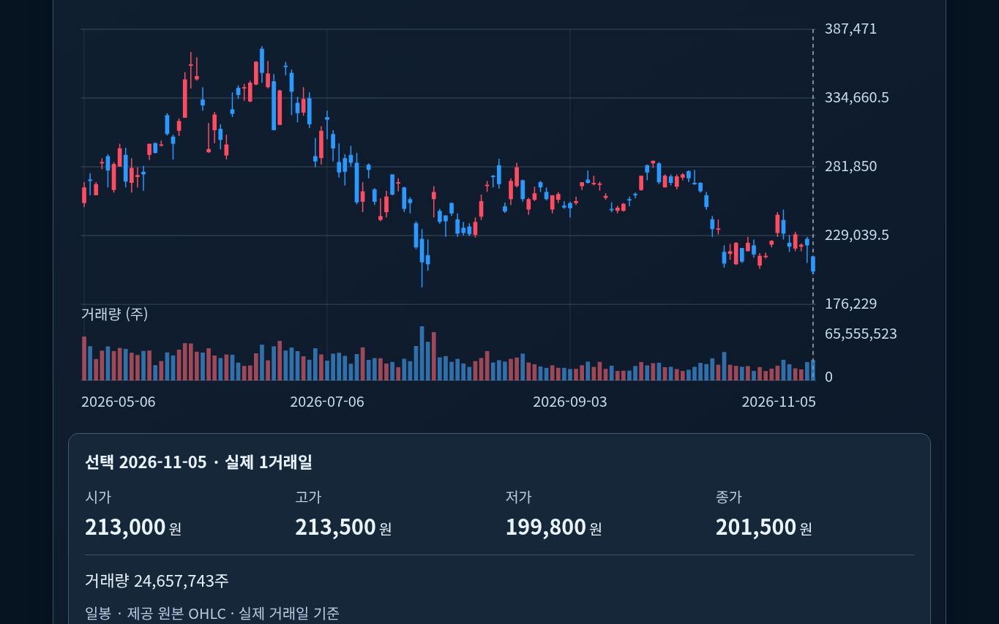
SHA-256 6cd377c95fb8abce24f77c33ee868c6229dffe2bf24c939500de220ae2c80dae
종목 상세 · 4지표 · 일반 스크롤 · 재무현황
1365×853 CSS px · 실제 Linux Chromium · 2026-11-06T04:09:06.589Z
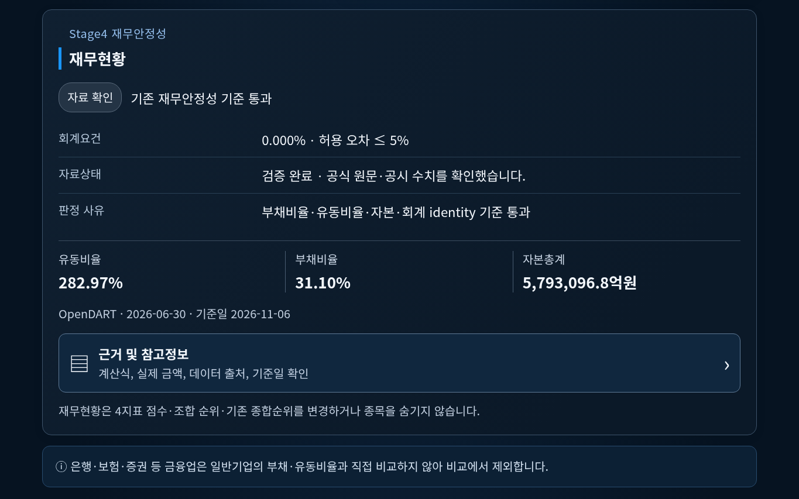
SHA-256 801a0f066123f50b842957d7bfebd355fcdd9a62d46313c261947a5d936bc93e
종목 상세 · 4지표 · 일반 스크롤
1365×853 CSS px · 실제 Linux Chromium · 2026-11-06T04:09:06.405Z
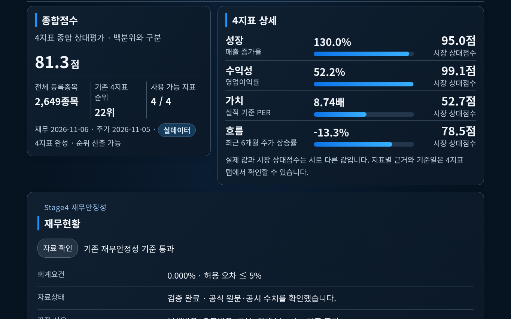
SHA-256 975143c99c9f79a814a6072c6fcd8585bb5aed9b4a409a2b8fa959501c2ed174
홈 대시보드 · 일반 스크롤
1365×853 CSS px · 실제 Linux Chromium · 2026-11-06T04:09:06.102Z
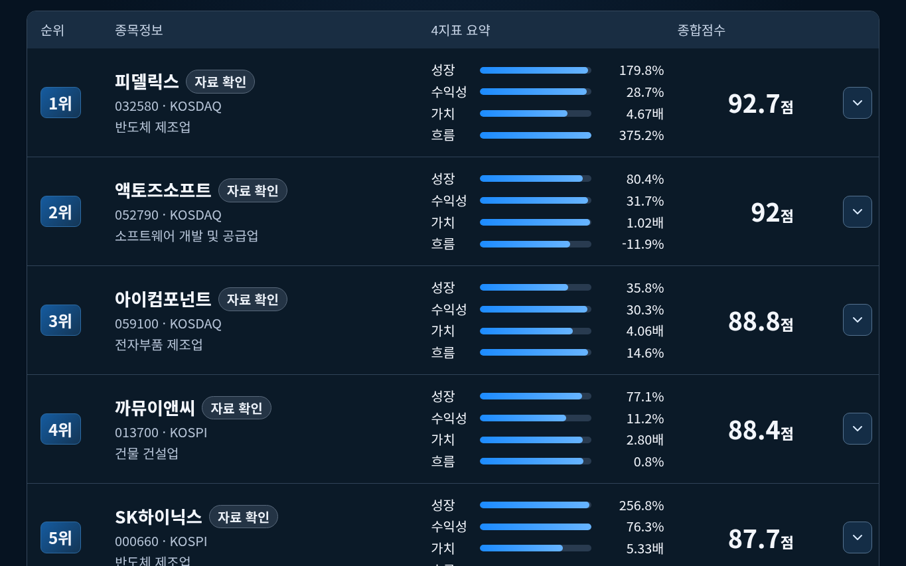
SHA-256 0176f7417ee0a6e3651aea2d52330c311ac6102103ee8e446e78f70fc6dd5ed9
전체 종목 순위 · 일반 스크롤
1365×853 CSS px · 실제 Linux Chromium · 2026-11-06T04:09:06.247Z

SHA-256 9da6cd282dfcbd40d7e2074426ae8a97364a9ca277c07bde7a7dab03cd0f0ee1